476年，在距离巴特那不远的恒河南岸，诞生了迄今所知最早的印度数学家——阿耶波多（Aryabhata）。巴特那现在是比哈尔邦的首府，原先叫华氏城，16世纪阿富汗人入侵后重建并改名为巴特那。释迦牟尼晚年曾行教至此，它是印度历史上最强盛的两个王朝——孔雀和笈多（约320—540）的都城。笈多王朝是中世纪统一印度的第一个王朝，疆域包括今天印度北部、中部和西部的大部分地区，其间诞生了十进制计数法、印度教艺术和伟大的梵文史诗、戏剧《沙恭达罗》及其作者迦梨陀娑（约5世纪），东晋高僧法显曾来此取经。
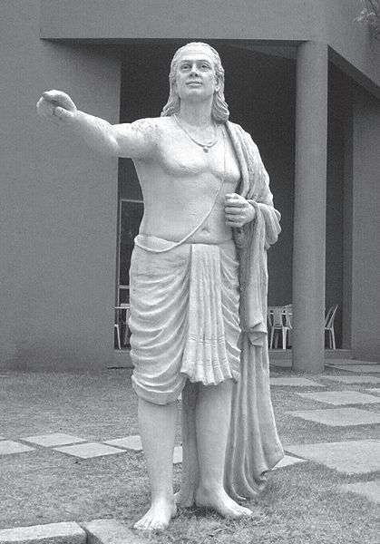
浦那的阿耶波多塑像
阿耶波多出生时，笈多王朝的首都已经西迁，华氏城开始衰落，但仍为学术中心（玄奘约于631年抵达此城）。与后来的印度数学家一样，阿耶波多的数学工作主要是为了研究天文学和占星术。他在故乡和华氏城著书立说，代表作有两部，一部是《阿耶波多历数书》（499），另一部算术书已失传。《阿耶波多历数书》的主要部分是天文表，但也包含了算术、时间的度量、球等数学内容。该书在800年左右被译成拉丁文，流传到欧洲。此书在印度尤其是南印度影响甚广，曾被多位数学家评注。
阿耶波多给出了连续n个正整数的平方和和立方和的表达式，即
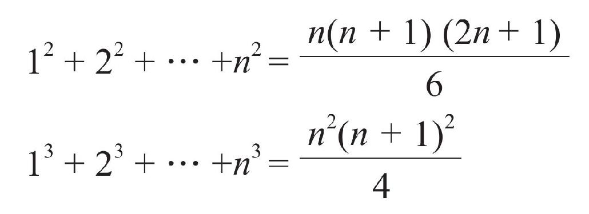
关于圆周率，阿耶波多在印度率先求得π=3.1416，但其方法不得而知（有人说他是通过计算圆内接正384边形的周长），或许与中国的π值计算方法有关系。在三角学方面，阿耶波多以制作正弦表闻名。古希腊的托勒密也制作过正弦表，但他把圆弧和半径的长度用不同的度量划分，非常不方便。阿耶波多做了改进，他默认曲线和直线用同一单位度量，制作了从0度到90度平均间隔为3°45′的正弦表。阿耶波多把半弦称作jiva，意思是猎人的弓弦；阿拉伯人把它译成dschaib，意思是胸膛、海湾或凹处；到了拉丁文里它又变成sinus，“正弦”（sine）一词即来源于此。
在解答算术问题时，阿耶波多经常采用“试位法”和“反演法”。所谓反演法，就是从已知条件逐步往回推。例如，他曾描述过这样的问题：“带着微笑眼睛的美丽少女，请你告诉我，什么数乘以3，加上这个乘积的3/4，然后除以7，减去此商的1/3，自乘，减去52，取平方根，加上8，除以10，得2？”根据反演法，我们从2这个数开始往回推，于是，（2×10–8）2 +52=196，
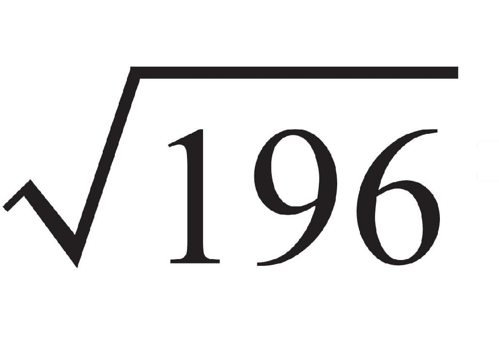
=14，14×（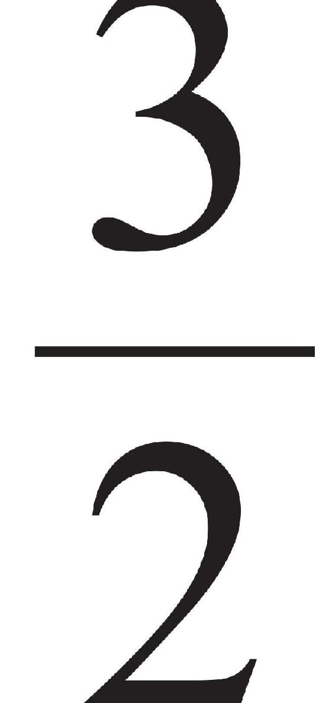
）×7×（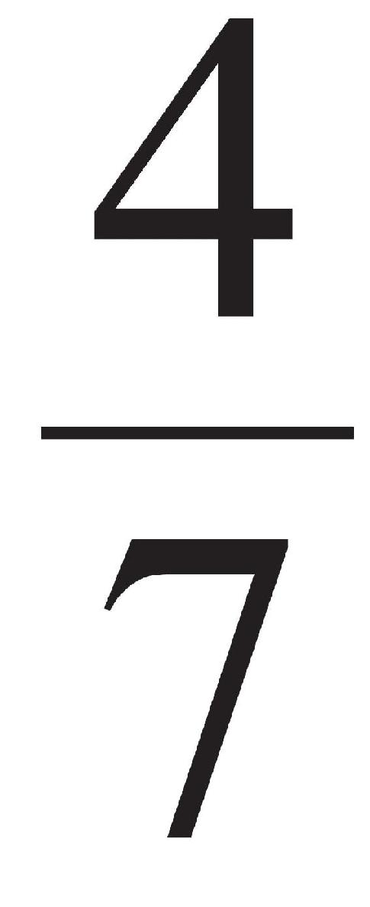
）/3=28，即为答案。从中我们也可以看出，印度数学家是用诗歌的语言来表达这类算术问题的。阿耶波多最有意义的工作是求解一次不定方程
ax+by=c
他利用所谓的“库塔卡”（kuttaka，意思是粉碎或碾细）方法。例如，设a>b>0，c=（a，b）是a和b的最大公因数，则
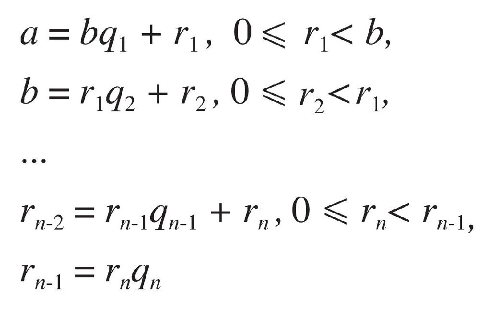
依次迭代，可将c=（a，b）=rn 表示成a和b的线性组合，从而求得上述不定方程的整数解x和y。
事实上，这种方法就是后来秦九韶在大衍术中使用的“辗转相除法”，它的雏形“更相减损术”早在《九章算术》里就已经出现。在西方这个方法叫欧几里得算法，只不过希腊人的这套方法也不完善，即便是最后一个数论大家丢番图，也只考虑此类方程的正整数解，阿耶波多和他的后继者则取消了这个限制。在天文学上，阿耶波多也有很多贡献，他用数学方法计算出黄道、白道的升交点和降交点的运动，提出日食和月食的推算方式，以及地球自转的想法，可惜并未得到后世同胞的认可和响应。为了纪念阿耶波多，印度发射成功的第一颗人造卫星以他的名字命名（1975）。
阿耶波多之后，印度又等了一个多世纪才出现下一个重要的数学家，那便是婆罗摩笈多（Brahmagupta，约598—约660）。有意思的是，在这100多年间，整个世界（无论东方还是西方）都没有产生一个大数学家。婆罗摩笈多的祖籍可能是在今巴基斯坦南部的信德省，该省的首府是巴基斯坦第一大城市卡拉奇，但婆罗摩笈多出生在印度中央邦西南部的城市乌贾因，并在那里长大。与比哈尔邦毗邻的中央邦是印度面积最大的邦，这两个邦是古代印度政治、文化和科学的中心地带，如同我们的中原地区。
乌贾因虽说不曾做过统一王朝的都城（笈多王朝之后印度一直处于分裂状态），却是印度七大圣城之一。北回归线经过这座城市的北郊，印度地理学家确定的第一条子午线也穿过它。它是继巴特那之后古代印度的数学和天文学中心，也是大诗人、戏剧家迦梨陀娑的诞生地，后者被视为印度历史上最伟大的作家。由于这两座城市相距将近1000公里（乌贾因离孟买比离巴特那更近），这就意味着印度的科学中心在向西南转移。据说阿育王继位以前，他的父王曾派他到乌贾因担任总督。婆罗摩笈多成年以后，一直在乌贾因天文台工作，在望远镜出现之前，它可谓世界上最古老、最负盛名的天文台之一。
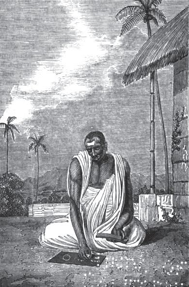
沉湎于计算的婆罗摩笈多
婆罗摩笈多留下了两部天文学著作，《婆罗多修正体系》（628）和《肯达克迪迦》（约665）。后者是在作者去世后刊出的，其中包括正弦函数表，他利用了不同于阿耶波多的方法，即“二次插值法”。《婆罗多修正体系》包含的数学内容更多，全书共分24章，“算术讲义”和“不定方程讲义”两章是专论数学的，前者研究三角形、四边形、二次方程、零和负数的算术性质、运算规则，后者研究一阶和二阶不定方程。其他各章虽然是关于天文学研究的，但也涉及不少数学知识。
以零的运算法则为例，婆罗摩笈多这样写道：“负数减去零是负数，正数减去零是正数，零减去零什么也没有，零乘负数、正数或零都是零……零除以零是空无一物，正数或负数除以零是一个以零为分母的分数。”最后这句话是印度人提出以零为除数问题的最早记录，将零作为一个数进行运算的思想被后来的印度数学家所继承。他也提出了负数的概念和记号，并给出了运算法则。“一个正数和一个负数之和等于它们的绝对值之差”，“一个正数与一个负数的乘积为负数，两个正数的乘积为正数，两个负数的乘积为正数”，这些在世界上都是领先的。
婆罗摩笈多最重要的数学成果是解下列不定方程
nx2 +1=y2
其中n是非平方数。虽然在欧洲费尔马是第一个提出此类方程的数学家，但它们却被18世纪的瑞士数学家欧拉错误地记为由佩尔提出，所以后人称它们为佩尔方程（Pell’s equation，佩尔是17世纪的英国数学家）。婆罗摩笈多给出了佩尔方程的一种特殊解法，并将其命名为“瓦格布拉蒂”。他的方法非常巧妙，这项成就在数学史上占有一席之地。
此外，婆罗摩笈多还给出了有关一元二次方程的一般求根公式，可惜丢了一个根。他也得到边长分别为a、b、c、d的四边形的面积公式，即
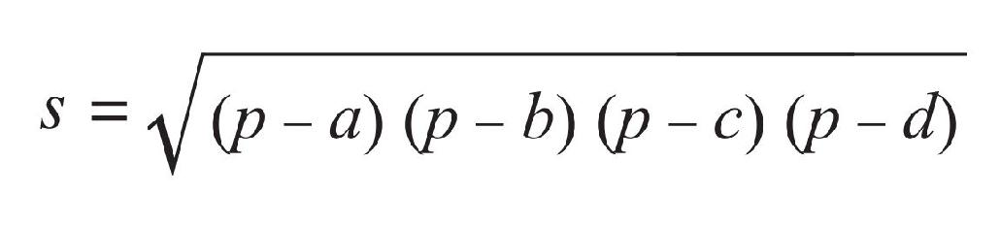
其中
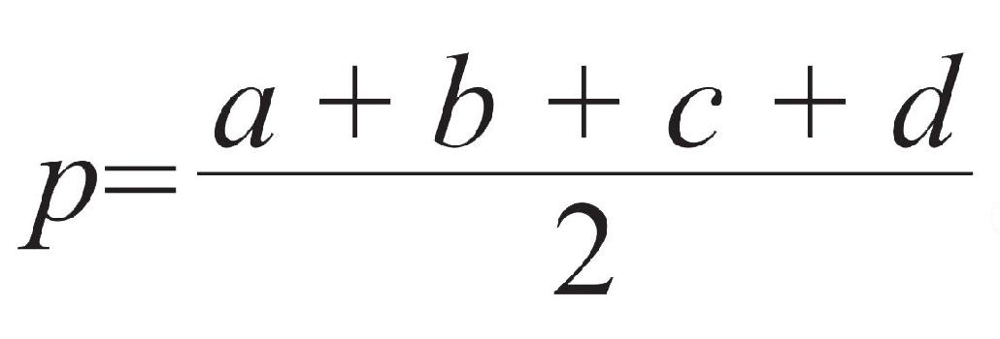
。可以想象，婆罗摩笈多一定对这个结果感到得意，但实际上，它仅仅对圆内接四边形才是正确的。最后，值得一提的是，利用两组相邻三角形的边长比例关系，他给出了一个关于毕达哥拉斯定理的漂亮证明。婆罗摩笈多是一位有思想的数学家，可惜这方面和他的生平一样留下来的资料很少。他说：“正如太阳之以其光芒使众星失色，学者也以其能提出代数问题而使满座高朋逊色，若其能给予解答则将使侪辈更为相形见绌。”想必在他生活的年代，乌贾因地区有着很好的学术氛围，史上也有所谓的“乌贾因学派”之说。遗憾的是，在婆罗摩笈多去世后的4个多世纪里，乌贾因再也没有出现杰出的数学家，政治动乱和王朝更迭可能是其中的一个主要原因。倒是在南印度相对偏僻的卡纳塔克（本意是“高地”）邦，诞生了两位数学天才——马哈维拉和婆什迦罗。
印度的国土面积不过300万平方公里，且南北的长度小于东西的长度，可是“南印度”的概念却扎根在印度人心中。印度南方有地势高耸的德干高原（“德干”来源于一个意思为“南方”的梵文词汇）及其北缘的两座山脉形成天然屏障，加上纳巴达（讷尔默达）河的护卫，使其免受北方历代王朝或帝国的入侵。事实上，来自北方的多次征讨都遭到南方的猛烈抵抗。雅利安人并没有带来他们的饮食习惯，亚历山大的军队未曾涉足，穆斯林和蒙古人的入侵只是点到为止，甚至法兰西和不列颠的影响也微乎其微。
我们对阿育王时代以前的南印度了解甚少，但有一点是明确的，即使分裂成相互对抗的阵营，南印度也与雅利安人统治的北方有着同样丰富和先进的文化，无论在宗教、哲学、价值观、艺术形式还是物质生活等方面。南方几个较大的独立政权国家或王朝为取得支配权而相互竞争，但谁都未能将整个地区统一起来置于自己的控制之下。每个王朝都与东南亚保持着发达的海上贸易关系，每个王朝的政治和文化生活都围绕着以寺庙建筑为主的首都展开。
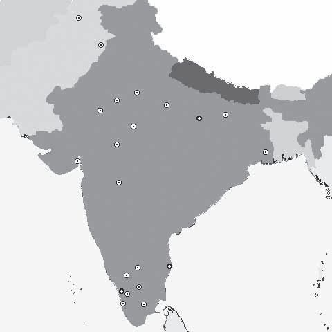
▲巴克沙利■瓜廖尔①阿耶波多②婆罗摩笈多③马哈维拉④婆什迦罗
印度数学家的出生地
在南方的诸多王朝里，有一个叫拉喜特拉库塔，大约在755至975年统治着德干高原及其附近的一块土地。这个王朝最初可能是由达罗毗荼人创造的，一度建立起庞大的帝国，以至于有一个穆斯林旅行者在他的书里把该王朝的统治者称为世界四大帝王之一（另外三个是哈里发、拜占庭皇帝和中国皇帝）。在特立尼达岛出生的印裔英国作家奈保尔（V.S.Naipaul，1932—）也提到过，在离班加罗尔320公里外的地方有一处维加雅那加王国的都城遗址，它是14世纪世界上最伟大的城市之一。
就在拉喜特拉库塔王朝处于鼎盛时期时，马哈维拉（Mahavira，约800—870）出生于迈索尔的一个耆那教徒家庭。迈索尔是印度西南海岸卡纳塔克邦的第二大城市，位于两座名城班加罗尔和卡利卡特之间。班加罗尔作为卡纳塔克邦的首府，如今已是印度的“硅谷”和国立数学研究所的所在地；卡利卡特既是中国航海家郑和去世的地方，也是葡萄牙人达·伽马绕过好望角抵达印度的港口。我们对马哈维拉的生平所知不多，只知道他成年后，在拉喜特拉库塔王朝的宫廷里生活过很长一段时间，可以说是一位宫廷数学家。
大约在850年，马哈维拉撰写了《计算精华》一书，该书曾在南印度被广泛使用。1912年，这部书被译成英文在马德拉斯（今金奈）出版。此书是印度第一部初具现代形式的教科书，现今数学教材中的一些论题和结构在其中可以见到。更为稀罕的是，《计算精华》是一部纯粹的数学书，几乎没有涉及任何天文学问题，这也是马哈维拉与前人不同的地方。全书共分9章，其中最有价值的研究成果包括：零的运算、二次方程、利率计算、整数性质和排列组合等。
马哈维拉指出，一数乘以0得0，减去0也不会使此数减少。他还指出，除以一个分数等于乘以此数的倒数，甚至提到一数除以零为无穷量。不过，他曾错误地断言负数的平方根不存在。有趣的是，与中国数学家杨辉潜心于幻方一样，马哈维拉也着迷于一种叫“花环数”的游戏。将两整数相乘，若其乘积的数字呈中心对称，马哈维拉就称之为“花环数”。他对这种特殊整数的构成规律进行了研究，例如：
14287143×7=100010001
12345679×9=111111111
27994681×441=12345654321
有趣的是，中国人沿用诗词里的词汇，称花环数为“回文数”，英文则叫Palindromic number，又称谢赫拉莎德数，即以《一千零一夜》里那位会讲故事的苏丹王妃命名。方幂数里也有许多花环数，例如，112 =121，73 =343，114 =14641，但迄今未见5次方的花环数。
耆那教的典籍中含有一些简单的排列组合问题，马哈维拉在总结前人工作的基础上，率先给出了今天我们熟知的二项式定理的计算公式，即若1≤r≤n，
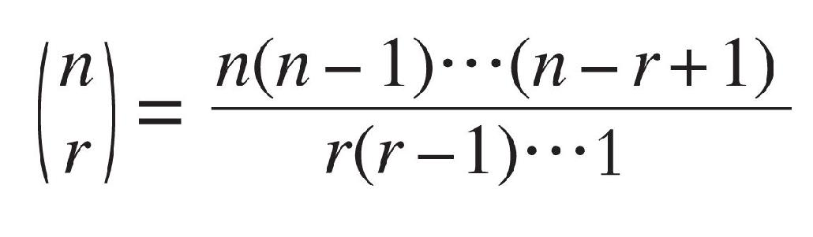
此时距离贾宪生活的时代尚有两个世纪。此外，马哈维拉还改进了一次不定方程的库塔卡解法，对古老的埃及分数做了深入研究，证明1可表示成任意多个单分数之和，任何分数均可表示成偶数个指定分子的分数之和，等等。他也详细地研究了某些高次方程的求解方法，平面几何的作图问题，以及椭圆周长和弓形面积的近似计算公式，后者与《九章算术》里的结果不谋而合。
接下来，我们终于要谈到印度古代和中世纪最伟大的数学家、天文学家婆什迦罗了。印度有两个叫婆什迦罗的数学家，一个生活在7世纪，而我们要说的那个生活在12世纪。1114年，婆什迦罗（Bhaskara）出生在印度南方德干高原西侧的比德尔，该城位于2010年国际数学家大会主办城市海得拉巴到孟买的公路和铁路线上，与马哈维拉的故乡迈索尔同属于卡纳塔克邦。婆什迦罗的父亲是正统的婆罗门（祭司贵族），曾写过一本很流行的占星术著作。婆什迦罗成年后，来到乌贾因天文台工作，成为婆罗摩笈多的继承者，后来还做了天文台的台长。
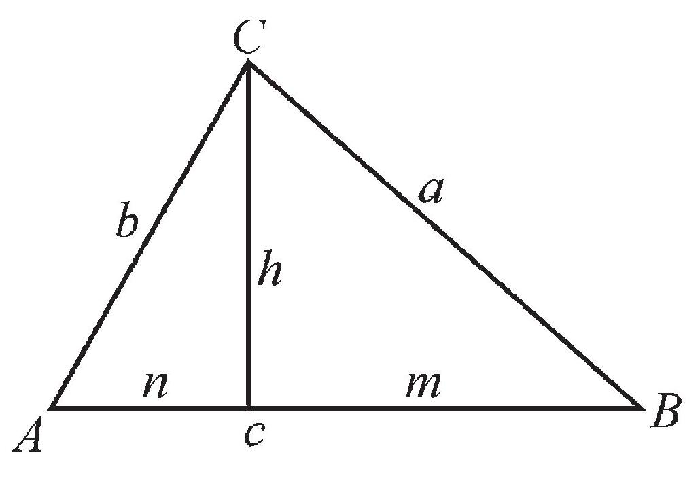
婆什迦罗依此图证明毕氏定理
到12世纪，印度数学已经积累了相当多的成果。婆什迦罗通过吸收这些成果并做进一步研究，取得了超越前人的成就。他的文学造诣也很高，其著作弥漫着诗一般的气息。婆什迦罗的重要数学著作有两部——《莉拉沃蒂》和《算法本源》。《算法本源》主要探讨代数问题，涉及正负数法则、线性方程组、低阶整系数方程求解等，还给出两个关于毕达哥拉斯定理的漂亮证明，其中一个与赵爽的方法相同，另一个直到17世纪才被英国数学家沃利斯（J.Wallis，1616—1703）重新发现。如图所示，利用相似三角形的性质，
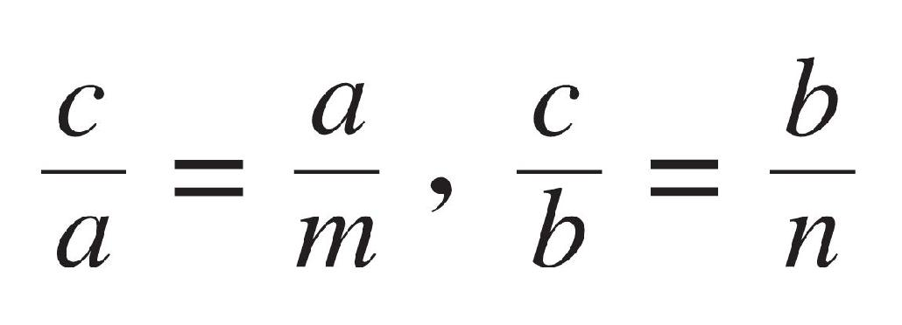
由此可得cm=a2 ，cn=b2 ，两式相加，即得
a2 +b2 =c(m+n)=c2
婆什迦罗还在书中谈到了朴素而粗糙的无穷大概念，他写道：
一个数除以零便成为一个分母是符号0的分数，例如3除以0得3/0。这个分母是符号0的分数，被称为无穷大量。在这个以符号0作为分母的量中，可以加入或取出任意量而无任何变化发生，就像在世界毁灭或创造世界的时候，那个无穷的、永恒的上帝没有发生任何变化一样，虽然有大量的各种生物被吞没或被产生。
《莉拉沃蒂》的内容更广泛一些，全书从一个印度教信徒的祈祷开始。说到这部书，有一个传说：莉拉沃蒂是婆什迦罗宠爱的女儿的名字，婆什迦罗占卜得知，她婚后将有灾祸降临。按照婆什迦罗的计算，如果女儿的婚礼在某一时辰举行，灾祸便可以避免。但到了婚礼那天，正当新娘等待着“时刻杯”中的水面下落，一颗珍珠不知什么原因从她的头饰上掉落，堵住了杯孔，水不再流出，以致无法确认“吉祥的时辰”。婚后莉拉沃蒂不幸失去了丈夫，为了安慰她，婆什迦罗教她算术，并以她的名字命名了自己的著作。 [1]
婆什迦罗对数学的主要贡献有：采用缩写文字和符号来表示未知数和运算；熟练地掌握了三角函数的和差化积等公式；比较全面地讨论了负数，将其命名为“负债”或“损失”，并表示成在数字上方加小点的形式。婆什迦罗写道：“正数、负数的平方常为正数，正数的平方根有两个，一正一负；负数无平方根，因为它不是一个平方数。”希腊人虽然早就发现了不可通约量，但却不承认无理数是数字。婆什迦罗和其他印度数学家则广泛使用无理数，并在运算时和有理数同等对待。
作为婆罗摩笈多数学事业的继承人，婆什迦罗对这位前辈的每项工作都进行了深入的了解和研究，并对其中的有些结果做了改进，尤其是佩尔方程nx2 +1=y2 的求解方法。作为一个天文学家，婆什迦罗也是硕果累累，他涉足的领域包括球面三角学、宇宙结构、天文仪器，等等。而且，处处可见数学家的观点和眼光，例如，他用微分学中的求“瞬时速度”的方法来研究行星的运动法则。据说后人在巴特那发现一块石碑，记载了1207年8月9日当地权贵捐给一个教育机构一笔款项，用于研究婆什迦罗的著作，而此时他已经去世（约1185）20多年了。
值得一提的是，在印度这块土地上，除了诞生萨克雷（W.M.Thackeray，1811—1863）、奥威尔（G.Orwell，1903—1950）和吉卜林（R.Kipling，1865—1936）这样的英国作家，也诞生过两位英国数学家。19世纪初和20世纪初，在南印度泰米尔纳德邦的马杜赖和金奈，数理逻辑学家摩根（A.Morgan，1806—1871）和拓扑学家亨利·怀特海（J.H.Whitehead，1904—1960）分别出生。前者断言亚里士多德传下的逻辑不必要地受到了限制，并成为现代数理逻辑学的奠基人。后者对拓扑学中同伦论的发展做出了重大贡献，并最先给出了微分流形的精确定义。有意思的是，也是在泰米尔纳德邦，19世纪后期还诞生了一位享誉世界的印度数学天才拉曼纽扬。
拉曼纽扬（S.Ramanujan，1887—1920）是主要依靠自学成才的天才型数学家，他在数论尤其是整数分拆方面有突出贡献，在椭圆函数、超几何函数和发散级数领域也做了出色的工作。他与稍早的诗人、诺贝尔文学奖得主泰戈尔（R.Tagore，1861—1941）是最让国人感到骄傲的两位印度人。在拉曼纽扬的精神感召下，20世纪后半叶的印度数学和自然科学有了很大的进展。在数论领域，出现了以拉曼羌德拉（K.Ramachandra，1933—2011）为首的印度学派，一直延伸到北美洲的加拿大。在物理学方面，印度人也有卓越贡献，仅马德拉斯大学就出过两位诺贝尔奖得主——拉曼（C.V.Raman，1888—1970）和钱德拉塞卡（S.Chandrasekhar，1910—1995），后者在拉曼纽扬去世时还是一个不满10岁的男孩。
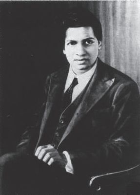
印度数学天才拉曼纽扬
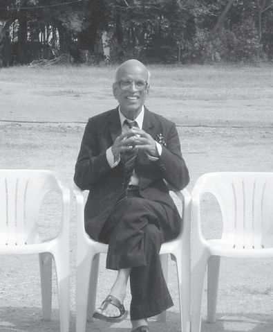
印度数学家拉曼羌德拉。作者摄于班加罗尔
[1] 自2010年印度海得拉巴开始，四年一度的国际数学家大会就设立了数学普及领域的“莉拉沃蒂奖”。